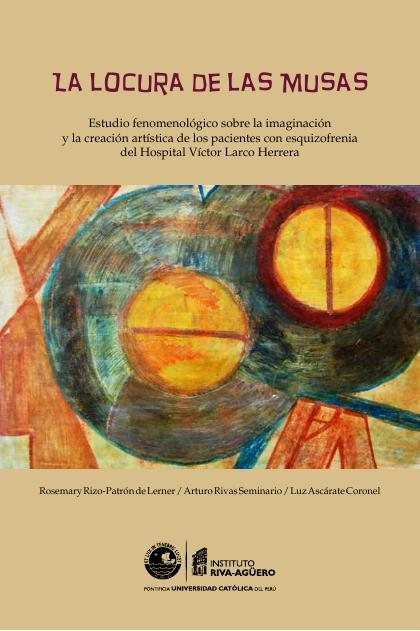
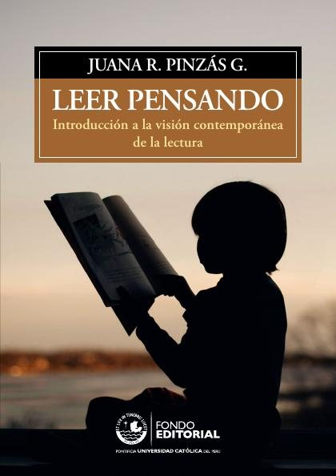
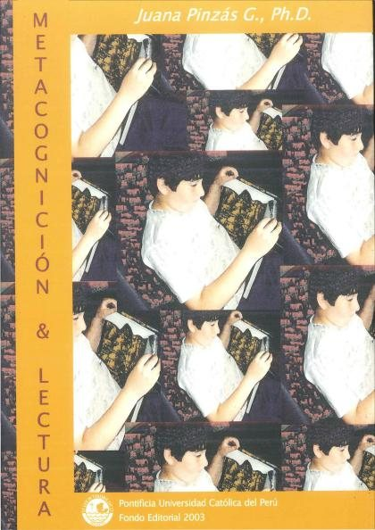
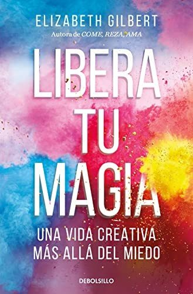
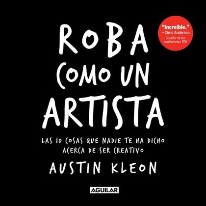
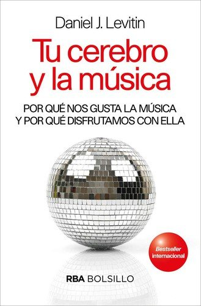
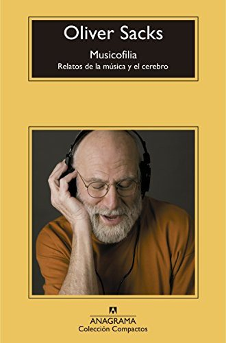
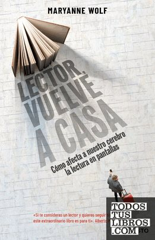

Libros de creatividad, arte y música
Libros de creatividad, arte y música en español: 16 libros completos para leer gratis aquí mismo y 5 fichas de títulos actuales.
Impacto de la música en el desarrollo cognitivo y neuronal: explorando beneficios y desafíosGonzález Hernández, Edurne; Bausela Herreras, Esperanza; Lorenzo de Reizábal, Arantza
Impacto de la música en el desarrollo cognitivo y neuronal: explorando beneficios y desafíosGonzález Hernández, Edurne; Bausela Herreras, Esperanza; Lorenzo de Reizábal, ArantzaRepercusiones neuronales y cognitivas de la formación musicalGonzález Hernández, Edurne; Lorenzo de Reizábal, Arantza; Bausela Herreras, Esperanza
Repercusiones neuronales y cognitivas de la formación musicalGonzález Hernández, Edurne; Lorenzo de Reizábal, Arantza; Bausela Herreras, EsperanzaTrude Sojka: resiliencia a través de las artesLópez Álvaro, Valeria
Trude Sojka: resiliencia a través de las artesLópez Álvaro, ValeriaPsicología del ArteSilberstein, Fernando
Psicología del ArteSilberstein, FernandoTerapias de cine. 50 películas básicas en torno a la medicinaTabernero Holgado, Carlos
Terapias de cine. 50 películas básicas en torno a la medicinaTabernero Holgado, CarlosGuía de orientación para la intervención de musicoterapia en personas con demenciaGarcía Valverde, Esther
Guía de orientación para la intervención de musicoterapia en personas con demenciaGarcía Valverde, EstherLa evolución de la atribución psicológica : lectura de mentes y metacogniciónQuintanilla Pérez Wicht, Pablo
La evolución de la atribución psicológica : lectura de mentes y metacogniciónQuintanilla Pérez Wicht, PabloLa locura de las Musas: estudio fenomenológico sobre la imaginación y la creación artística de los pacientes con esquizofrenia del Hospital Víctor Larco HerreraRizo-Patrón de Lerner, Rosemary; Rivas Seminario, Arturo; Ascárate, Luz
La locura de las Musas: estudio fenomenológico sobre la imaginación y la creación artística de los pacientes con esquizofrenia del Hospital Víctor Larco HerreraRizo-Patrón de Lerner, Rosemary; Rivas Seminario, Arturo; Ascárate, Luz
Leer pensando : introducción a la visión contemporánea de la lecturaPinzás G., Juana
Leer pensando : introducción a la visión contemporánea de la lecturaPinzás G., Juana
Arteterapia contra la marginación socialCallejón-Chinchilla, María-Dolores
Arteterapia contra la marginación socialCallejón-Chinchilla, María-DoloresMetacognición y lecturaPinzás G., Juana
Metacognición y lecturaPinzás G., Juana
Importancia de la imaginación en el estudio de la fisiología : memoria leida en la sesión pública extraordinaria de 25 de junio de 1892 celebrada por la Real Academia de Ciencias y Artes de Barcelona con motivo de la recepción del autor como académico numerario /Coll i Pujol, Ramon, 1845-1915
Importancia de la imaginación en el estudio de la fisiología : memoria leida en la sesión pública extraordinaria de 25 de junio de 1892 celebrada por la Real Academia de Ciencias y Artes de Barcelona con motivo de la recepción del autor como académico numerario /Coll i Pujol, Ramon, 1845-1915El tejer como una alternativa de expresión artística y terapéutica, para usuarios del Cpi2 del Hospital Mental de AntioquiaTapasco Bueno, Edith
El tejer como una alternativa de expresión artística y terapéutica, para usuarios del Cpi2 del Hospital Mental de AntioquiaTapasco Bueno, EdithLocura y realidad. Lectura psicoantropológica del QuijoteChoza Armenta, Jacinto Luis; Arechederra, Juan José
Locura y realidad. Lectura psicoantropológica del QuijoteChoza Armenta, Jacinto Luis; Arechederra, Juan JoséEl arte de gozarde La Mettrie, Julien Offroy; Miguel Pujadas y Jordi Ribas (introducción, traducción y notas)
El arte de gozarde La Mettrie, Julien Offroy; Miguel Pujadas y Jordi Ribas (introducción, traducción y notas)El buen trato con la infancia. ¿Cómo lo vemos?. Desde la psicología, la salud, la comunicación a la creatividad gráficaAcosta Naranjo, Enrique; Gómez de Terreros, Ignacio; Esteban Arbués, Andrés; Ruiz-de-Lacanal, María-Dolores; Blázquez-Pacheco, Diego; Hernández Rey, José Miguel
El buen trato con la infancia. ¿Cómo lo vemos?. Desde la psicología, la salud, la comunicación a la creatividad gráficaAcosta Naranjo, Enrique; Gómez de Terreros, Ignacio; Esteban Arbués, Andrés; Ruiz-de-Lacanal, María-Dolores; Blázquez-Pacheco, Diego; Hernández Rey, José MiguelLibera tu magiaElizabeth Gilbert
Libera tu magiaElizabeth Gilbert
Roba como un artistaAustin Kleon
Roba como un artistaAustin Kleon
Tu cerebro y la músicaDaniel J. Levitin
Tu cerebro y la músicaDaniel J. Levitin
MusicofiliaOliver Sacks
MusicofiliaOliver Sacks
Lector, vuelve a casaMaryanne Wolf
Lector, vuelve a casaMaryanne Wolf
Temas relacionados
¿Estás eligiendo carrera?
Haz gratis el test de orientación vocacional de AURZANE: intereses, aptitudes, autoconcepto y hábitos de estudio, con informe completo.